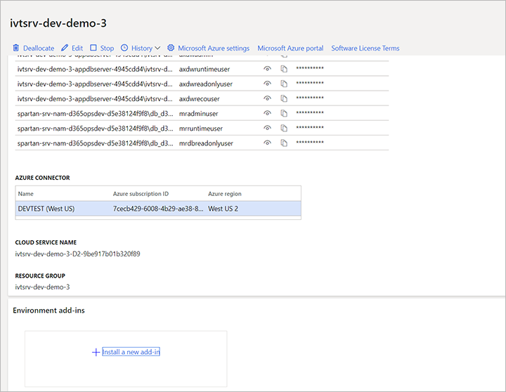

Inventory Visibility Add-in
Important
Dynamics 365 for Finance and Operations hat sich zu speziell entwickelten Anwendungen entwickelt, mit denen Sie bestimmte Geschäftsfunktionen verwalten können. Weitere Informationen zu diesen Änderungen finden Sie im Dynamics 365-Lizenzierungshandbuch.
Important
Die hier aufgeführten Funktion sind alle oder teilweise im Rahmen einer Vorschauversion verfügbar. Inhalt und Funktionsweise unterliegen Änderungen. Weitere Informationen zu Vorschauversionen finden Sie in den FAQ zu Dienstupdates für One Version.
Das Inventory Visibility Add-in ist ein unabhängiger und hoch skalierbarer Microservice, der die Verfolgung von Beständen in Echtzeit ermöglicht und so eine globale Sicht auf den Bestand bietet.
Alle Informationen, die sich auf den Bestand beziehen, werden durch Low-Level-SQL-Integration nahezu in Echtzeit an den Dienst exportiert. Externe Systeme greifen über RESTful APIs auf den Dienst zu, um Bestandsinformationen über festgelegte Dimensionen abzufragen und so eine Liste der verfügbaren Bestandspositionen zu erhalten.
Inventory Visibility ist ein Microservice, der auf der Common Data Service aufbaut, d.h. Sie können ihn mit der Power Apps erweitern und mit der Power BI kundenspezifische Funktionen bereitstellen, um Ihre Geschäftsanforderungen zu erfüllen. Es ist auch möglich, den Index zu erweitern, um Bestandsabfragen durchzuführen.
Inventory Visibility bietet Konfigurationsoptionen, mit denen es sich in mehrere Drittsysteme integrieren lässt. Es unterstützt die standardisierte Dimension des Bestands, benutzerdefinierte Erweiterbarkeit und standardisierte, konfigurierbare berechnete Mengen.
In diesem Thema wird beschrieben, wie Sie das Inventory Visibility Add-In für Dynamics 365 Supply Chain Management installieren und konfigurieren und wie Sie seine Anwendungsprogrammierschnittstelle (API) verwenden.
Installieren Sie das Inventory Visibility Add-In
Sie müssen das Inventory Visibility Add-In über Microsoft Dynamics Lifecycle Services (LCS) installieren. LCS ist ein Portal für die Zusammenarbeit, das eine Umgebung und eine Reihe von regelmäßig aktualisierten Diensten bereitstellt, die Sie bei der Verwaltung des Lebenszyklus Ihrer Dynamics 365 Finance and Operations-Apps unterstützen.
Weitere Informationen finden Sie unter Ressourcen für Lifecycle Services.
Voraussetzungen
Bevor Sie das Inventory Visibility Add-In installieren, müssen Sie Folgendes tun:
- Besorgen Sie sich ein LCS-Implementierungsprojekt mit mindestens einer bereitgestellten Umgebung.
- Erzeugen Sie die Beta-Schlüssel für Ihr Angebot in LCS.
- Aktivieren Sie die Betaschlüssel für Ihr Angebot für Ihren Benutzer in LCS.
- Wenden Sie sich an das Microsoft Inventory Visibility-Produktteam und geben Sie eine Umgebungs-ID an, in der Sie das Inventory Visibility-Add-In bereitstellen möchten.
Wenn Sie Fragen zu diesen Voraussetzungen haben, wenden Sie sich bitte an das Inventory Visibility-Produktteam.
Installieren des Add-Ins
Um das Inventory Visibility Add-In zu installieren, gehen Sie wie folgt vor:
Melden Sie sich am Lifecycle Services (LCS) Portal an.
Wählen Sie auf der Startseite das Projekt aus, in dem Ihre Umgebung bereitgestellt ist.
Wählen Sie auf der Projektseite die Umgebung aus, in der Sie das Add-In installieren möchten.
Scrollen Sie auf der Seite der Umgebung nach unten, bis Sie den Abschnitt Umgebungs-Add-Ins sehen. Wenn der Abschnitt nicht sichtbar ist, stellen Sie sicher, dass die vorausgesetzten Beta-Schlüssel vollständig verarbeitet wurden.
Wählen Sie im Abschnitt Umgebungs-Add-Ins die Option Ein neues Add-In installieren. 
Wählen Sie den Link Ein neues Add-In installieren. Es öffnet sich eine Liste der verfügbaren Add-Ins.
Wählen Sie Bestandsdienst aus der Liste. (Beachten Sie, dass dies jetzt möglicherweise als Add-In Inventory Visibility für Dynamics 365 Supply Chain Management aufgeführt wird).
Geben Sie Werte für die folgenden Felder für Ihre Umgebung ein:
- AAD-Anwendungs-ID
- AAD-Mandanten-ID

Stimmen Sie den Bedingungen zu, indem Sie das Kontrollkästchen Bedingungen und Konditionen aktivieren.
Wählen Sie Installieren. Der Status des Add-Ins wird als Installation angezeigt. Wenn es fertig ist, aktualisieren Sie die Seite, um den Status auf Installiert zu ändern.
Abrufen eines Sicherheitsdienst-Tokens
Um ein Sicherheitsdienst-Token zu erhalten, gehen Sie wie folgt vor:
Holen Sie sich Ihre
aadTokenund rufen Sie den Endpunkt: https://securityservice.operations365.dynamics.com/token auf.Ersetzen Sie die
client_assertionim Body durch IhreaadToken.Ersetzen Sie den Kontext im Body durch die Umgebung, in der Sie das Add-In bereitstellen wollen.
Ersetzen Sie den Bereich im Body durch den folgenden:
- Bereich für MCK - „https://inventoryservice.operations365.dynamics.cn/.default“
(Die Anwendungs-ID Azure Active Directory und die Mandant-ID für MCK finden Sie inappsettings.mck.json.) - Geltungsbereich für PROD - „https://inventoryservice.operations365.dynamics.com/.default“
(Die Azure Active Directory Anwendungs-ID und Mandanten-ID für PROD finden Sie inappsettings.prod.json.)
Das Ergebnis sollte dem folgenden Beispiel ähneln.
{ "grant_type": "client_credentials", "client_assertion_type":"aad_app", "client_assertion": "{**Your_AADToken**}", "scope":"**https://inventoryservice.operations365.dynamics.com/.default**", "context": "**5dbf6cc8-255e-4de2-8a25-2101cd5649b4**", "context_type": "finops-env" }- Bereich für MCK - „https://inventoryservice.operations365.dynamics.cn/.default“
Sie werden eine
access_tokenals Antwort erhalten. Diese benötigen Sie als Inhaber-Token, um die Inventory Visibility API aufzurufen. Hier ist ein Beispiel.{ "access_token": "{Returned_Token}", "token_type": "bearer", "expires_in": 1200 }
Add-In deinstallieren
Um das Add-In zu deinstallieren, wählen Sie Deinstallieren. Aktualisieren Sie LCS und das Inventory Visibility Add-in wird entfernt. Der Deinstallationsprozess entfernt die Registrierung des Add-Ins und startet außerdem einen Job zum Bereinigen aller im Dienst gespeicherten Geschäftsdaten.
Öffentliches API des Inventory Visibility Add-Ins
Die öffentliche REST-API des Inventory Visibility Add-Ins bietet mehrere spezifische Endpunkte für die Integration. Sie unterstützt drei Hauptinteraktionstypen:
- Buchen von Bestandsänderungen an das Add-In aus einem externen System.
- Abfrage von aktuellen Bestandsmengen aus einem externen System.
- Automatische Synchronisation mit dem Supply Chain Management-Bestand.
Die automatische Synchronisation ist nicht Teil der öffentlichen API, sondern wird für Umgebungen, die das Inventory Visibility Add-in aktiviert haben, im Hintergrund ausgeführt.
Authentifizierung
Das Plattform-Sicherheits-Token wird verwendet, um das Inventory Visibility Add-in aufzurufen, daher müssen Sie ein Azure Active Directory-Token mit Ihrer Azure Active Directory-Anwendung erzeugen.
Weitere Informationen darüber, wie Sie das Sicherheitstoken erhalten, finden Sie unter Installieren des Inventory Visibility Add-Ins.
Konfigurieren Sie die Inventory Visibility API
Bevor Sie den Dienst verwenden, müssen Sie die in den folgenden Unterabschnitten beschriebenen Konfigurationen durchführen. Die Konfiguration kann je nach den Details Ihrer Umgebung variieren. Sie besteht im Wesentlichen aus vier Teilen:
Partitionierung
Die Partitionierung kann die Leistung der Inventory Visibility API erheblich beeinflussen. Es ist eine gute Idee, ein Schema zu definieren, das kleine Gruppierungen von Daten zulässt und trotzdem sinnvolle Datenabfragen ermöglicht.
Die organizationId (dataAreaId im Supply Chain Management) wird immer Teil der Partitionierung sein, und standardmäßig ist Inventory Visibility so festgelegt, dass es nach Dimensionen wie Standort + Lagerplatz partitioniert. Das bedeutet, dass der Dienst immer mit diesen in den Filtern definierten Dimensionen abgefragt werden muss.
Note
Standort und Lagerplatz sind zwei allgemeine Standarddimensionen in Inventory Visibility. Im Supply Chain Management heißen diese Dimensionen Standort (InventSiteId) und Lagerort (InventLocationId)
Konfigurationen der Dimensionen
Inventory Visibility stellt eine Liste allgemeiner Standarddimensionen zur Verfügung, um die Integration mehrerer Quellsysteme zu ermöglichen.
In der folgenden Tabelle sind die Bestandsdimensionen aufgeführt, die als Standarddimensionen in Inventory Visibility verwendet werden.
| Dimensionstyp | Dimensionsname |
|---|---|
| Produkt | ColorId |
| Produkt | SizeId |
| Produkt | StyleId |
| Produkt | ConfigId |
| Nachverfolgung | BatchId |
| Nachverfolgung | SerialId |
| Ziel | LocationId |
| Ziel | SiteId |
| Bestand Status | StatusId |
| Lagerspezifisch | WMSLocationId |
| Lagerspezifisch | WMSPalletId |
| Lagerort-spezifisch | LicensePlateId |
Note
Der in der vorherigen Tabelle aufgeführte Dimensionstyp dient nur als Referenz. Sie müssen den Dimensionstyp nicht in Inventory Visibility definieren.
Wenn eine benutzerdefinierte Dimension existiert und zu einem Standardwert fließen muss, wenn sie von Inventory Visibility konsumiert wird, können Sie den Namen Benutzerdefinierte Dimension in Inventory Visibility konfigurieren.
Externe Systeme greifen auf Inventory Visibility über RESTful-APIs zu, mit denen Bestandsinformationen über festgelegte Dimensionen abgefragt werden können. Für die Integration können Sie in Inventory Visibility die Externe Kanaldatenquelle und die Quelldimension zu den Zieldimensionen konfigurieren.
Die Zieldimensionen sollten eine der folgenden sein:
- Standarddimensionen in Inventory Visibility
- Benutzerdefinierte Dimensionen
Der Zweck der Dimensionskonfiguration ist es, die Multisystem-Integration für die Abfrage auf Dimensionen und das Buchungsereignis mit Dimensionen zu standardisieren.
Indizierung
In den meisten Fällen wird die Bestandsabfrage nicht nur auf der höchsten „Gesamt“-Ebene erfolgen, sondern Sie möchten die Ergebnisse möglicherweise auf der Basis der Bestandsdimensionen aggregiert sehen.
Inventory Visibility bietet Flexibilität, indem es Ihnen erlaubt, die Indizes festzulegen, die auf der Dimension oder der Kombination der Dimensionen basieren.
Note
Derzeit können Sie nur Indizes bis maximal fünf konfigurieren. Sie müssen vor der Implementierung sorgfältig abwägen, welche Dimension oder Dimensionskombination Sie verwenden wollen, um sicherzustellen, dass sie Ihren geschäftlichen Anforderungen entspricht. Wenn Sie z. B. Produkte wie folgt abfragen wollen:
- Abfrage des aggregierten Produktbestandes nach den Dimensionen Farbe und Größe.
- In manchen Fällen wollen Sie nur das Produkt insgesamt abfragen.
Dann würden Sie zwei Indizes wie folgt definieren:
["ColorId", "SizeId"][]
Die leere Klammer wird auf Basis der Produkt-ID innerhalb der Partition aggregiert.
Die Indizierung definiert, wie Sie Ihre Ergebnisse basierend auf der Abfrageeinstellung groupBy gruppieren können. Wenn Sie in diesem Fall keine groupBy-Werte definieren, erhalten Sie Summen nach productid. Wenn Sie dagegen groupBy als groupBy=ColorId&groupBy=SizeId definieren, erhalten Sie mehrere Zeilen zurück, basierend auf den verschiedenen Farb- und Größenkombinationen im System.
Sie können Ihre Abfragekriterien in den Abfragekörper einlagern.
Hier ist eine Beispielabfrage für das Produkt mit Farb- und Größenkombination.
{
"filters": {
"OrganizationId": ["usmf"],
"ProductId": ["MyProduct"],
"LocationId": ["21"],
"SiteId": ["2"],
"ColorId": ["Red"]
},
"groupByValues": [
"SizeId",
"ColorId"
],
"returnNegative": true
}
Benutzerdefinierte Messung
Die voreingestellten Messungen sind mit dem Supply Chain Management verknüpft, aber Sie möchten vielleicht eine Menge haben, die sich aus einer Kombination der voreingestellten Kennzahlen zusammensetzt. Dazu können Sie eine Konfiguration von benutzerdefinierten Mengen haben, die zur Ausgabe der Bestandsabfragen hinzugefügt werden.
Die Funktionalität erlaubt es Ihnen einfach, eine Reihe von Kennzahlen festzulegen, die addiert werden, und/oder eine Reihe von Kennzahlen, die subtrahiert werden, um die benutzerdefinierte Messung zu bilden.
Mit der folgenden Abfragebedingung konfigurieren Sie zum Beispiel die benutzerdefinierte Messung als MyCustomAvailableforReservation, die vom Verbrauchssystem verbraucht werden soll.
[
{
"productId": "MyProduct",
"dimensions": {
"colorid": "Red"
},
"quantities": {
"mypos": {
"outbound": 20.0,
"inbound": 80.0
},
"fno": {
"availphysical": 100.0,
"orderedintotal": 50.0,
"orderedreserved": 10.0
},
"exterchannel": {
"received": 90.0,
"scheduled": 30.0,
"issued": 60.0,
"reserved": 40.0
}
}
}
]
| Verbrauchs-System | Berechnete Kennzahlen | Datenquelle | Modifikator | Modifikator Berechnungsart |
|---|---|---|---|---|
CustomChannel |
MyCustomAvailableforReservation |
fno |
availphysical |
Hinzufügung |
CustomChannel |
MyCustomAvailableforReservation |
fno |
orderedintotal |
Hinzufügung |
CustomChannel |
MyCustomAvailableforReservation |
fno |
orderedreserved |
Subtrahieren |
CustomChannel |
MyCustomAvailableforReservation |
mypos |
inbound |
Hinzufügung |
CustomChannel |
MyCustomAvailableforReservation |
mypos |
outbound |
Subtrahieren |
CustomChannel |
MyCustomAvailableforReservation |
exterchannel |
received |
Hinzufügung |
CustomChannel |
MyCustomAvailableforReservation |
exterchannel |
scheduled |
Hinzufügung |
CustomChannel |
MyCustomAvailableforReservation |
exterchannel |
issued |
Subtrahieren |
CustomChannel |
MyCustomAvailableforReservation |
exterchannel |
reserved |
Subtrahieren |
Damit wird die Abfrage auf die benutzerdefinierte Messung Menge die folgende Ausgabe zurückgeben.
[
{
"productId": "MyProduct",
"dimensions": {
"colorid": "Red"
},
"quantities": {
"mypos": {
"outbound": 20.0,
"inbound": 80.0
},
"fno": {
"availphysical": 100.0,
"orderedintotal": 50.0,
"orderedreserved": 10.0
},
"exterchannel": {
"received": 90.0,
"scheduled": 30.0,
"issued": 60.0,
"reserved": 40.0
},
"CustomChannel": {
"MyCustomAvailableforReservation": 220.0
}
}
}
]
Die Ausgabe MyCustomAvailableforReservation basiert auf der Berechnungseinstellung in den benutzerdefinierten Messungen als:
100 + 50 + 80 + 90 + 30 – 10 – 20 – 60 – 40 = 220
Verbuchung von Vorratsänderungen
Die genaue URL, unter der das Ereignis gepostet wird, hängt von Ihrer geografischen Region ab. Sie wird die Form haben:
https://{serviceURL}/api/environment/{environmentId}/onhand
Wenn Sie authentifiziert sind, kann diese URL zusammen mit der HTTP-Methode POST verwendet werden, um Ereignisse zu senden, die von Hand geändert werden.
Für die Kommunikation mit Dynamics 365-Diensten über HTTP-Anfragen wird ein spezieller Header verwendet, der die Umgebungs-ID der Supply Chain Management-Instanz angibt, mit der die Daten verknüpft sind. Beispiel:
x-ms-environment-id: 2db79622-f97a-4d64-9844-d12efed41796
Buchen von On-Hand-Änderungen Abfragebeispiel 1
Dieses Beispiel zeigt ein Szenario, in dem Sie die Konfiguration der Dimension in Power Apps festlegen werden.
Verwenden Sie die folgende Abfrage, um die Zuordnung der Dimension in Power Apps zu konfigurieren:
{
"PosSizeId": "SizeId",
"PosColorId": "ColorId",
"PosSiteId": "SiteId",
"PosLocationId": "LocationId"
}
Jetzt können Sie die dimensionDataSource angeben und benutzerdefinierte Dimensionen in Ihren Abfragen verwenden. Das System wird die benutzerdefinierten Dimensionen automatisch in Basisdimensionen umwandeln.
{
"id": "demo-test-00007",
"organizationId": "usmf",
"productId": "MyProduct",
"quantities": {
"pos": {
"Outbound": 1
}
},
"dimensionDataSource": "pos",
"dimensions": {
"PosSizeId": "Large",
"PosColorId": "Red",
"PosSiteId": "2",
"PosLocationId": "21"
}
}
Buchen von Bestandsänderungen Abfragebeispiel 2
Dieses Beispiel zeigt ein Szenario, in dem keine Zuordnungen für die Dimensionskonfiguration in Power Apps festgelegt sind, sodass die Buchung auch die Basisdimensionen verwenden soll. Alle Dimensionen müssen Basisdimensionen sein, wenn das Feld dimensionDataSource null, leer oder ein Leerzeichen ist.
{
"id": "demo-test-00007",
"organizationId": "usmf",
"productId": "MyProduct",
"quantities": {
"pos": {
"Outbound": 1
}
},
"dimensions": {
"SizeId": "Large",
"ColorId": "Red",
"SiteId": "2",
"LocationId": "21"
}
}
JSON-Dokument-Feldeigenschaften
Die Felder aus den zuvor angegebenen JSON-Abfragebeispielen haben die in der folgenden Tabelle aufgeführten Eigenschaften.
| Feldkennung | Beschreibung |
|---|---|
id |
Eine eindeutige ID für das spezifische Änderungsereignis. Diese ID wird verwendet, um sicherzustellen, dass, wenn die Kommunikation mit dem Dienst während der Buchung fehlschlägt, ein erneutes Einreichen des Ereignisses nicht dazu führt, dass dasselbe Ereignis im System doppelt gezählt wird. |
organizationId |
Die Kennung der Organisation, die mit dem Ereignis verknüpft ist. Dies entspricht der Zuordnung zu Supply Chain Management-Organisationen oder Datenbereichs-IDs. |
productId |
Die Kennung des betreffenden Produkts. |
quantity |
Die Menge, um die der Lagerbestand geändert werden muss. Wenn z.B. 10 neue Bagels in ein Regal gestellt wurden, wäre dieser Wert 10. Wenn dann 3 Bagels aus dem Regal entfernt oder verkauft würden, wäre dieser Wert -3. |
dimensionDataSource |
Die Datenquelle der Dimensionen, die im Umbuchungsereignis und in der Abfrage verwendet werden. Wenn Sie die Datenquelle angeben, können Sie die benutzerdefinierten Dimensionen aus der angegebenen Datenquelle verwenden. Mit der Dimensionskonfiguration kann Inventory Visibility die benutzerdefinierten Dimensionen den allgemeinen Standarddimensionen zuordnen. Wenn die dimensionDataSource nicht angegeben wird, können Sie nur die allgemeinen Standarddimensionen in Ihren Abfragen verwenden. |
dimensions |
Eine dynamische Tasche mit Schlüssel/Wertpaaren. Diese werden einigen der Dimensionen im Supply Chain Management zugeordnet, aber Sie können auch benutzerdefinierte Dimensionen hinzufügen (wie Quelle), die angeben, ob das Ereignis aus dem Supply Chain Management oder einem externen System stammt. |
Abfrage des aktuellen Lagerbestands
Der Endpunkt für die Abfrage des aktuellen Lagerbestands wird eine ähnliche URL haben:
https://{serviceURL}/api/environment/{environmentId}/onhand/indexquery
Er wird mit der HTTP-Methode POST abgefragt.
Abfrage des aktuellen Lagerbestands Beispiel 1
Dieses Beispiel zeigt ein Szenario, bei dem Sie die Konfiguration der Dimension in Power Apps bereits abgeschlossen haben.
Verwenden Sie die folgende Abfrage, um die Zuordnung der Dimension in Power Apps zu konfigurieren:
{
"PosSizeId": "SizeId",
"PosColorId": "ColorId",
"PosSiteId": "SiteId",
"PosLocationId": "LocationId"
}
Jetzt können Sie die dimensionDataSource angeben und benutzerdefinierte Dimensionen in Ihren Abfragen verwenden. Das System wird die benutzerdefinierten Dimensionen automatisch in Basisdimensionen umwandeln. Sie können die DimensionDataSource in filters angeben und benutzerdefinierte Dimensionen sowohl in filters als auch in groupByValues angeben. Das System wird die benutzerdefinierten Dimensionen automatisch in Basisdimensionen umwandeln.
{
"filters": {
"OrganizationId": ["usmf"],
"ProductId": ["MyProduct"],
"DimensionDataSource": ["Pos"],
"PosLocationId": ["21"],
"PosSiteId": ["2"],
"PosColorId": ["Red"]
},
"groupByValues": [
"PosSizeId",
"PosColorId"
],
"returnNegative": true
}
Aktuelle Bestandsabfrage Beispiel 2
Dieses Beispiel zeigt ein Szenario, in dem keine Zuordnungen für die Dimensionskonfiguration in Power Apps festgelegt sind, sodass die Buchung auch die Basisdimensionen verwenden soll. Alle Dimensionen müssen Basisdimensionen sein, wenn das Feld dimensionDataSource unter filters null, leer oder ein Leerzeichen ist.
{
"filters": {
"OrganizationId": ["usmf"],
"ProductId": ["MyProduct"],
"LocationId": ["21"],
"SiteId": ["2"],
"ColorId": ["Red"]
},
"groupByValues": [
"SizeId",
"ColorId"
],
"returnNegative": true
}
Beispiel Rückgabeergebnis
Die in den vorherigen Beispielen gezeigten Abfragen könnten ein Ergebnis wie dieses zurückgeben.
[
{
"productId": "MyProduct",
"dimensions": {
"colorid": "Red"
},
"quantities": {
"mypos": {
"outbound": 20.0,
"inbound": 80.0
},
"fno": {
"availphysical": 100.0,
"orderedintotal": 50.0,
"orderedreserved": 10.0
},
"exterchannel": {
"received": 90.0,
"scheduled": 30.0,
"issued": 60.0,
"reserved": 40.0
},
"CustomChannel": {
"MyCustomAvailableforReservation": 220.0
}
}
}
]
Beachten Sie, dass die Mengen-Felder als ein Wörterbuch von Kennzahlen und ihren zugehörigen Werten strukturiert sind.